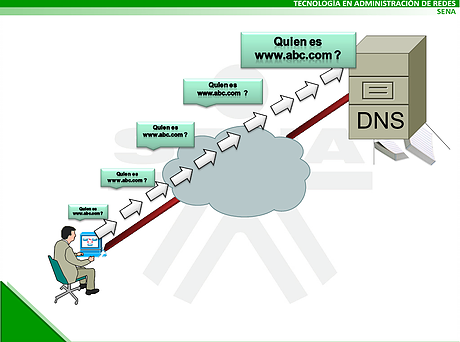
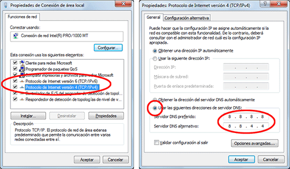

Sistema de nombres de dominio.
|
La consulta dns consiste primero en verificar o comprobar primero los dns de un dominio y
luego de conocer los dns autoritativos para ese dominio, obtener los registros de la zona DNS,
como pueden ser el tipo A (la dirección IPv4 del dominio), el tipo AAAA (la dirección IPv6 del
dominio), el tipo MX (el servidor de correo del dominio), el tipo CNAME, el tipo TXT y otros
datos que pueden estar incluidos en la zona DNS, así como el SOA, el TTL, etc.
|
 |
CAMBIAR DNS |
|
|
El procedimiento para cambiar dns puede referirse a dos situaciones. Una, la de cambiar dns en el panel
del registrador de dominios donde fue registrado el dominio. Esta operación se hace normalmente cuando se
ha cambiado de servicio de hosting y por tanto se cambian los dns de un proveedor para indicar los dns del
nuevo proveedor de web hosting. La otra situación a la que puede referirse el cambiar dns puede ser cuando
se hacen cambios en la dirección IP que apunta hacia el servidor dns físico. |
 |